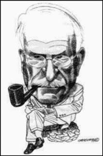

Wydarzenia.
Najnowsze wydarzenia z życia gabinetu.
"Obrazy nieświadomości – jungowskie metody pracy z psychiką" - konferencja PTPJ 2019.
W ramach konferencji przeprowadzę warsztat "Symbolic constellations" autorstwa Martina Skali wraz z socjoterapeutką mgr Luizą Niedźwiecką.
Termin: 6 października 2019 r., Kraków
Zapisy: Rejestracja na konferencję